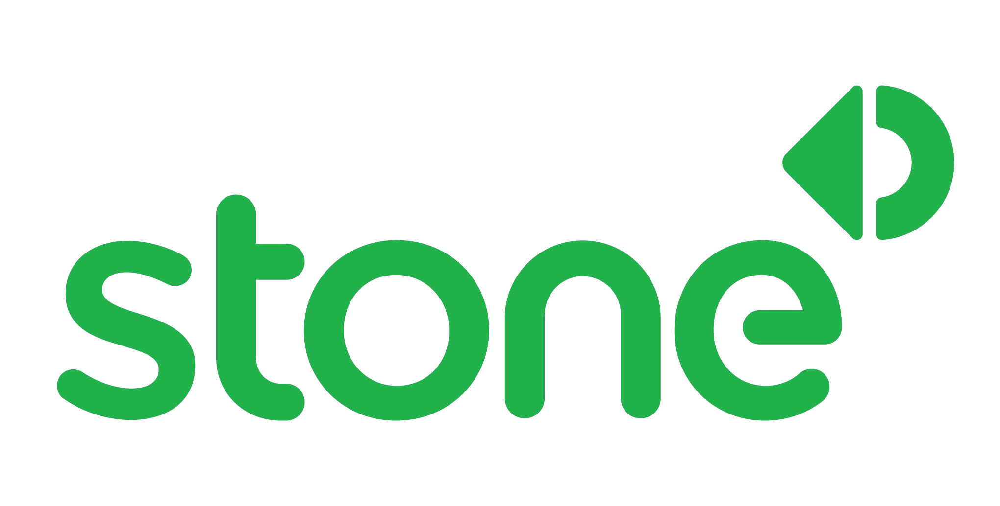
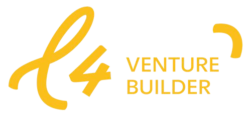
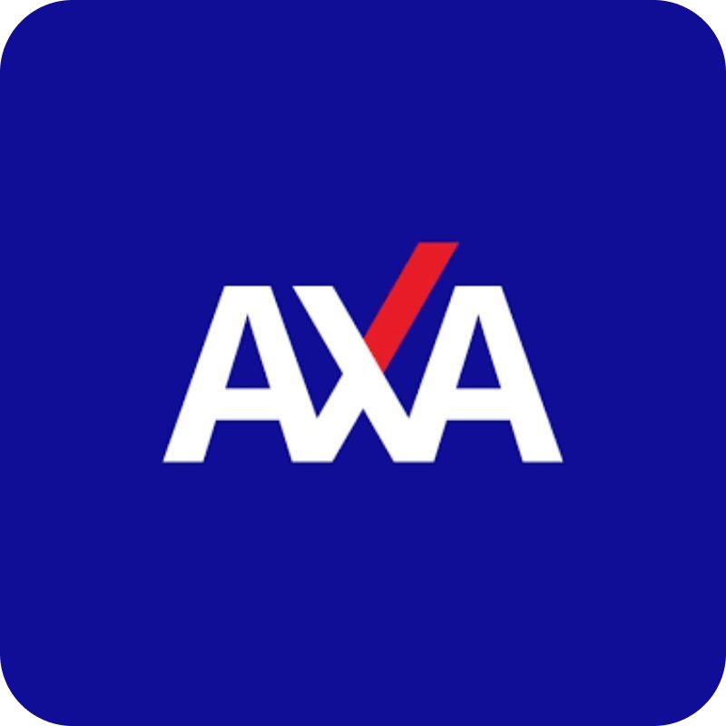
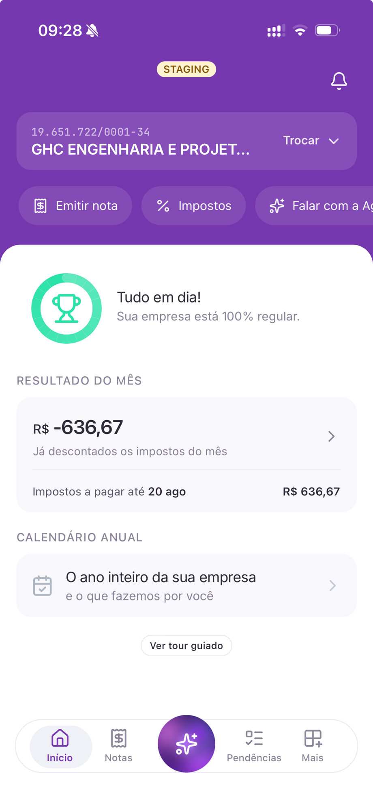

$ ./agilize --talk secomp --2026
O dev que a IA
não vai _
O que um CTO realmente contrata — e valoriza — em 2026.

$ whoami
Adriano Fialho
Co-founder e CTO @ Agilize



Obrigado!
É isso. Todos serão substituídos.
// EOF — boa tarde, pessoal. Perguntas?
"A IA vai me substituir?"
A ansiedade nº1 de quem estuda
e trabalha com tecnologia hoje.
Resposta curta: sim e não.
Depende do dev que você decidir ser.

O modelo mental não é “usar IA pra codar mais rápido”. É “você é o PM, os agentes são seus engenheiros, e seu trabalho é manter todos desbloqueados.”
Se você só está assistindo um agente codar, já ficou pra trás. Esse tempo ocioso deveria ser gasto iniciando outro agente.
O gap de produtividade entre quem pensa assim e quem não pensa já é enorme.
Se isso já é verdade
na Anthropic,
quanto tempo até ser verdade
em todo lugar?
A Jornada
Da era das cavernas ao fogo
A Idade da Pedra
do Desenvolvimento
Código bruto. Linha por linha. Caractere por caractere.
Stack Overflow era a biblioteca de Alexandria.
Copiar e colar de fórum era técnica avançada.
O valor de um dev se media pela capacidade de produzir código manualmente.
Os Primeiros Sinais
"Isso é muleta" — "Dev de verdade não precisa disso"
Essa resistência se repetiu em cada nova onda.
A Chegada do Copilot
Curiosos
Experimentando, testando, aprendendo
Céticos
"Vai gerar código ruim"
"Vai criar dependência"
"É plágio"
O mercado se dividiu. A resistência era real.
It's a_ TRUE LOVE story
O Experimento
RESULTADO?
"FORA, IA!"
"Prefiro escrever do zero."
"O código da IA é bagunçado."
"Não vou confiar meu trabalho nisso."
"A IA se perde e faz coisas que não pedi."
"Se for pra arrumar depois, prefiro fazer logo."
Reações reais — inclusive dentro da Agilize.
Lia
O primeiro app 100% feito com IA na Agilize.
Criada em 2023, 4 horas — Go, Node.js e AWS Lambda.
Não era autocomplete. Era um sistema inteiro, de ponta a ponta.
+ Curiosidade − Orgulho
"Como você fez esse bot no Slack?"
"Quais prompts você usou?"
"A IA gerou o dashboard inteiro?"
A resistência não morre no debate. Morre no resultado.
Quando seu valor sempre foi medido por escrever código, o que sobra quando algo escreve por você?
A virada de chave
na Agilize...
Coisas que levariam semanas saindo em dias.
Problemas complexos resolvidos em horas.
A Descoberta do Fogo
Quando a IA parou de ser assistente
e começou a trabalhar de verdade.
Não só sugerindo código enquanto a gente digitava — mas pegando uma tarefa e executando do início ao fim.
A barreira não foi técnica.
Foi cultural.
"Será que vai fazer certo?"
"Eu deveria estar acompanhando..."
"E se der ruim?"
Gerações de devs foram treinadas pra acreditar que o valor está em escrever o código.
O valor está em resolver problemas.
O Mundo Hoje
Uma parte enorme do mercado ainda está descobrindo o fogo.
A velocidade da mudança acelerou. E a distância só aumenta.
O gap de produtividade
100x
A diferença entre quem orquestra cinco agentes em paralelo
e quem ainda escreve código linha por linha
não é linear. É de ordens de magnitude.
O que fez diferença?
A disposição de experimentar mesmo com medo.
De ajustar a cultura mesmo quando era desconfortável.
De aceitar que o jeito antigo de trabalhar
não era sagrado.
Essa disposição é o que separa quem lidera de quem corre atrás.
A Virada
De executor para orquestrador
Antes
Como eu faço isso?
IA como ferramenta. Você no centro. Executando.
Agora
Como eu orquestro isso?
Agente executa. Você orquestra. Múltiplos em paralelo.
Você é o PM.
Os agentes são seus engenheiros.
Seu trabalho: manter todos desbloqueados.
Isso vale pra todo mundo. Dev, PM, designer, analista.
Quem aprender a orquestrar multiplica sua capacidade.
O Novo Dev
a estrategista
a IA gera
e direção
skill técnica
O código continua importando.
Mas quem decide o quê e por quê vale mais do que quem só digita.
Benchmark
O que o mercado está dizendo
Dados da Anthropic — 2026
Esses ganhos estão se tornando o novo baseline de competitividade.
Stripe — 2025
Pull Requests por semana gerados por agentes de IA.
Agentes de IA já escrevem ~25% de todo o código da Stripe. Não é experimento. É operação.
Token Burners Culture
Não usar tokens é indicativo de que a pessoa não está trabalhando corretamente com IA.
Token parado é produtividade desperdiçada.
Cases Reais
O que já fizemos na Agilize
Na Agilize, hoje
Não é roadmap. É o dia a dia de uma empresa em Salvador.
Bug Zero Touch
Workflow que simula como a gente debuga: lê o card do Jira, analisa o código, consulta endpoints de produção, monta hipótese, testa localmente e abre o PR.
Jira → contexto do código → dados quentes de produção → hipótese → teste local → PR aberto.
Depois registra endpoints descobertos, áreas frágeis e padrões de erro — cada bug resolvido alimenta o próximo.
AutIA: Citizen Developers
Contadores desenvolvendo software e automatizando o próprio trabalho.
Sem tech. Sem produto. Sem depender de ninguém.
Projeto será ampliado em 2026.
Quem entende o problema constrói a solução. Essa é a regra.
Aline: Abertura de Empresa via WhatsApp
Feita com Agno + Python, toda com vibe coding. Abrindo empresas de ponta a ponta.
Cliente mandou áudio de 6 minutos descrevendo como queria abrir a empresa.
Aline entendeu tudo, respondeu só pra confirmar os dados. Abertura saiu em 1 dia.
MarIA e ClaudIA
IAs que atendem clientes de verdade, todos os dias.
Respondem por 40% dos atendimentos da Agilize.
NeoCortex: Cérebro Externo
Servidor MCP em Go que dá ao Claude Code memória persistente, gestão de tarefas e contexto sob demanda.
Knowledge Base — decisões, padrões, learnings com busca full-text
Task Management — subtasks, fases, dependências, sessões
Context Serving — monta contexto inteligente com token budgeting
Substitui o Obsidian como knowledge store. Memória que sobrevive entre conversas.
Agilijira: O Clone do Jira
Um sistema completo que vai substituir o Jira na empresa. 3 horas de trabalho humano + 12h de trabalho da IA.
Shots curtos de 5 a 15 minutos de orquestração. Agentes autônomos rodando em paralelo, executando enquanto cuidava de outras coisas.
Você não fica assistindo o agente trabalhar. Você dispara outro agente enquanto o primeiro executa.
Potencial economia de R$ 150 mil/ano.
Agilify: O Clone do Pipefy
Construído sozinho por um CPO. Não é dev de formação. Não tem time dedicado.
Orquestrou agentes e entregou um produto completo.
Potencial impacto financeiro: economia de R$ 1,5 milhão/ano para a Agilize.
A capacidade de construir não está mais restrita a quem sabe programar.
Está disponível pra quem sabe orquestrar.
O App da Agilize
O novo app da Agilize, construído com IA no fluxo inteiro de desenvolvimento em 20 dias (demoraria 8 meses).
Não é protótipo. É produto indo pra mão do cliente.

Voz no Celular, Código na Tela
Um áudio no Telegram, direto do celular, vira tarefa executada por agentes.
Sem abrir o notebook. Sem digitar uma linha.
Programar andando.
Programar dirigindo.
Programar enquanto faz qualquer coisa.
Programar enquanto brinca com seu filho.
O limite deixa de ser a velocidade de digitação e passa a ser a clareza do pensamento.
Deep Study
Como a Anthropic constrói software
Dados reais do time da Anthropic
Workflow
Times "fully AI aligned". Múltiplos agentes rodando em paralelo. Engenheiros como gerentes de projeto dos agentes.
Resultado
A Anthropic shipando mais que qualquer outra empresa em 2026. Não é coincidência. É consequência.
O Dev de 2026
O que um CTO realmente contrata e valoriza
O que eu olho num dev hoje
Perdeu valor
Ganhou valor
E multiplica quem pensa, direciona e orquestra.
O mundo já mudou.
Quem não começar agora, vai passar anos tentando entender por que ficou pra trás.